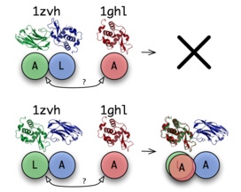
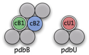
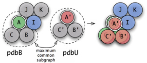
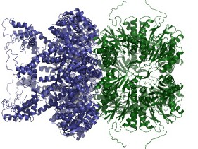
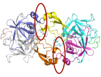
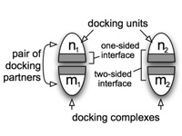
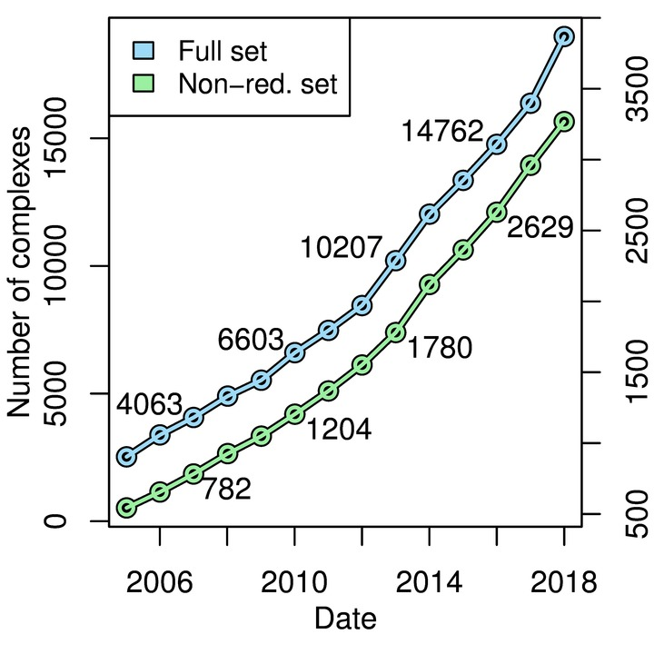

About the ProPairs Method
The ProPairs algorithm identifies protein docking complexes within the Protein Data Bank (PDB): For every PDB structure the algorithm considers it as a potential docking complex and tries to detect all suitable unbound structures. If at least one suitable unbound structure is found, the initial PDB structure is considered to be a legitimate protein docking complex.
Scanning the entire PDB with this approach has high computational costs. ProPairs uses parallelization and has efficient pre-filtering to avoid a combinatorial explosion. For a more detailed description of the ProPairs method, please refer to [Krull et al. 2015] or to the source code.
Interface Partitioning with the Unbound Assignment Algorithm
Asking Questions with Seeds
The core of the ProPairs algorithm is a tool that is able to answer simple yes/no questions: In the first example on the right we ask:
"Is the structure 1zvh a protein docking complex with the interface between the chain A and L and is chain A of 1ghl a suitable unbound structure for chain A of 1zvh?"The answer is "no". But if we ask:
"Is the structure 1zvh a protein docking complex with the interface between the chain L and A and is chain A of 1ghl a suitable unbound structure for chain L of 1zvh?"
The answer is "yes"!
Such a question can be formulated as a tuple (pdbB, cB1, cB2, pdbU, cU1) that we call a seed. The initial requirements for a seed are:
- pdbB is a PDB structure with at least two chains (cB1, and cB2)
- cB1 and cB2 are in contact
- pdbU is a PDB structure with at least one chain (cU1)
- cB1 has high sequence identity to cU1
- pdbU has no chain with sequence identity to cB2
If any of these requirements are not met, the answer of the algorithm is "no". The idea is to ask a very specific question that gives a deterministic answer. Later we show how to use a pre-filter to find promising questions and how to combine all the answers to generate the ProPairs data set.
Binding Partners with Multiple Chains: Chain-Assignments
In many cases the individual binding partners of a docking complex consist of multiple chains and of course this is also the case for the suitable unbound structures. So how to recognize the unbound structure within the complex structure if both consist of multiple chains? The ProPairs algorithm computes the maximum common subgraph between the potential complex and the unbound structure:
- Nodes correspond to chains and edges to chain interfaces.
- Chains are matched if their sequences have high sequence identity
- Chain interfaces are matched if they show high sequence identity of the residues involved in the interaction.
First, the algorithm looks for an initial assignment (cB1 to cU1) that is specified by the seed and then tries to expand this solution by further assignments.
Summary
In short, the unbound assignment algorithm performs the following steps:
- Start with seed (pdbB, cB1, cB2, pdbU, cU1)
- Expand cB1 by matching chains with pdbU
- Expand cB2 by unmatched chains of pdbB (check connectivity)
- Compute interface between all chains of B1 and all chains of cB2
- Check if no DNA is located in interface
- Locate interface residues of cB1 in cU1 (by sequence alignments)
- Superpose unbound structure with cB1 by interface residues
- Expand cU1 by unmatched chains of pdbU (check for clashes)
- Find cofactors in the interface regions and report matchings
- Compute interface-RMSD of cB1 and cU1
If a legitimate docking complex was found, we get: the interface specified and the chains of the unbound structure assigned to the bound binding partner.
Constraints
Currently, for a potential protein docking complex only structures obtained by X-ray diffraction are considered. For the complex only the first biological unit that is specified by the PDB is used. The method discards any complexes or unbound structures that have DNA or RNA within the interface. Complexes that are homomers can not be detected by this approach.
Computation of Seeds
The input of the unbound assignment algorithm is a seed (pdbB, cB1, cB2, pdbU, cU1) consisting two structures and three chains. pdbB is a PDB structure with two or more chains and has an assumed interface between the chains cB1 and cB2. pdbU is a PDB structure that contains the chain cU1, which is the assumed unbound state of cB1. We search the entire Protein Data Bank for any protein interactions with by constructing all possible seeds with all combinations of proteins and chains and apply the unbound assignment algorithm. However, the unbound assignment algorithm itself has exponential time complexity and due to the high number of possible seeds, this would cause a computational problem, which could require years to be solved.
It is not feasible to apply the interface partitioning described above to all PDB structures. For this reason we need an efficient pre-filter that produces only those seeds that have a high probability to result in a legitimate assignment. Moreover, the pre-filter should have a zero false negative rate such that no seeds that result in a legitimate docking complex are filtered out. There are two basic requirements a seed needs to fulfill in order to give a legitimate docking complex:
- cU1 needs to have a high sequence identity to cB1.
- pdbU does not contain any chain that has high sequence identity to cB2.
Additionally, to reduce the number of seeds resulting in identical assignments, we require:
- cB1 and cB2 need to be in direct contact.
To be able to produce seeds that are able to meet these requirements, we compute sequence identities between all chains within the PDB. We also compute chain connectivity for every PDB structure. Using this precomputed data along with relational algebra, we can efficiently identify every PDB structure with two interfacing chains, of which at least one of the chains can be found without the others in any existing structure. By restricting the seeds to only those that fulfill the three basic requirements, we can lower the number of possibilities from 2.6e11 to 1e6 (Nov 2013) without omitting legitimate docking complexes. In about 50% a given seed can identify a legitimate interface.
From the Large to the Small ProPairs Data Set
In the previous steps we proposed a method to specify the interface chains for protein docking complexes. As a result we obtain the large ProPairs data set. This set contains two types of redundancies:
- redundancies between protein docking complexes
- redundancies between the unbound structures assigned to a docking complex
Detection of Similar Interfaces
Similar interfaces can be found between different structures of docking complexes and also, due to symmetry, within a single structure. We require that the resulting set of interfaces is evenly distributed with respect to similarity and not to contain redundant data. To accomplish this, our approach uses agglomerative hierarchical clustering, for which we need to compute all pairwise distances for all interfaces. Therefore, we obtain the similarity of two protein docking complexes (p1 and p2), where p1 consists of the docking units n1, m1 and p2 consists of the two docking units n2, m2. The algorithm first computes sequence alignments between the docking units (n1->n2 and m1->m2) and then analyzes the coverage of the residues within the interfaces. The cross-combination (n1->m2 and m1->n2) is also considered. Once, all pairwise interfaces of the large ProPairs data set are computed, we apply hierarchical clustering.
The Small (Nonredundant) ProPairs Data Set
Representative Docking Complexes
Following the clustering step, we choose from each interface cluster from the large ProPairs set exactly one representative docking complex that is to be assigned to the small ProPairs set. The representative structure is selected based on a ranking of all computed docking complexes that belong to the interface cluster. Higher-ranking candidates have a high structural quality (e.g. no residue gaps) and are close to the mediod of the cluster they belong to.
Representative Unbound Structures
For each representative docking complex structure of the small ProPairs set, we rank all unbound structures previously assigned to either binding partner according to high structural quality and to high structural similarity to the binding partner within the docking complex. We include the highest-ranking pair of unbound structures with the bound structure in the small ProPairs set. During this step we require that the two unbound structures together possess the complete set of cofactors found in the interface of the docking complex.
Updates
We designed the ProPairs algorithm to be able to deal with
the steady growth of the PDB. In 2013, when we developed the ProPairs algorithm,
we created copy of the PDB. This copy gave us in 2,070 non-redundant complexes.
Since then, we modified ProPairs to support PDB's official snapshots that are created
every year in early January. The figure on the right shows the number of complexes that are
identified by ProPairs for all PDB snapshots since 2005.
On this webpage we provide the ProPairs data set for the latest PDB snapshot.
As of Jan 2018, the ProPairs data set contains 3,268 non-redundant protein docking complexes.